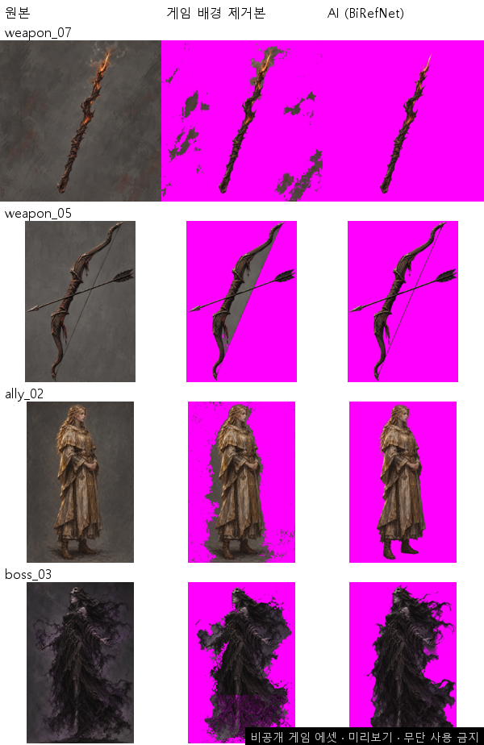
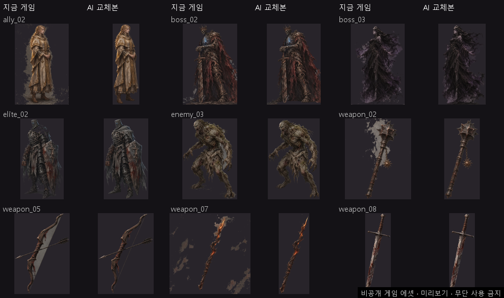
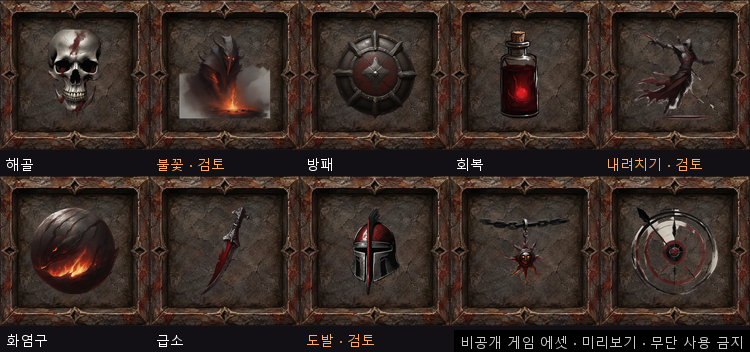

혼자 만드는 출시 예정 다크 판타지 게임의 그림 작업에서 병목 두 곳에 AI를 넣고, 미리 정한 기준으로 도입 여부를 판단했습니다. 모든 모델은 노트북 GPU에서 돌렸고 그림을 외부로 보내지 않았습니다.
boss_01처럼 바꿨습니다. 그림을 다른 용도로 쓰지 말아 주세요.PoC의 목적은 완성품이 아니라 "도입할지 판단"입니다.
레슨 유형: 검사·판독. 게임에 이미 들어간 배경 제거 그림 31장을 BiRefNet 결과와 견줘 결함 10장을 찾았고, 9장은 AI로 바로 교체할 수 있었습니다.
레슨 유형 밖의 생성. SDXL로 알아볼 수 있는 아이콘 8개를 만들었지만, 화풍이 게임 그림만큼 맞지 않았습니다. 생성은 지금처럼 하고, 배경 제거와 검사만 바꿉니다.
게임 배경 제거본과 AI 결과의 겹침(IoU)이 임계값보다 낮으면 "검토 필요"로 표시합니다. 임계값을 올리면 결함을 더 잡지만 사람이 볼 그림도 늘어납니다. 레슨 예시 1의 임계값 구간과 같은 생각입니다.
0.93에서 결함 10장을 모두 잡고 31장 중 16장만 보면 됩니다. 결함이 아닌데 표시된 그림도 대부분 발밑 그림자 같은 "경미" 판정이라 한 번 볼 만합니다.
처음엔 게임 배경 제거본을 정답으로 놓고 AI를 채점했는데, 모든 방법이 같은 그림에서 함께 낮은 점수를 받았습니다. 확인해 보니 정답 쪽이 틀려 있었습니다.


초록 선은 목표 0.95입니다. AI 세 모델 모두 색 지우기 기준선보다 확실히 낫지만 목표에는 못 미쳤습니다. 차이는 주로 발밑 그림자(남길지 정하지 않은 설계 선택), 빛·연기 효과, 머리카락 같은 가는 경계에서 났습니다.
SDXL로 아이콘마다 시드 4장을 만들고, SigLIP 2가 한국어 이름 10개 중 정답을 고를 확신이 0.5 이상이면 자동 채택, 아래면 사람 검토로 넘겼습니다. 그 뒤 BiRefNet으로 배경을 지웠습니다.

| 아이콘 | SigLIP 확신 | 자동 채택 | 사람 판정 | 메모 |
|---|
자동 채택한 7개는 모두 실제로 쓸 수 있었고, 검토로 넘긴 3개 중 2개는 실제 불량이었습니다. 불꽃은 비유 표현("불길의 혀") 때문에 괴물이 나왔고, 내려치기는 동작을 요청해서 전사 전신이 나왔습니다. 프롬프트가 SDXL 한도(77토큰)를 넘어 뒷부분이 잘린 것도 실패 원인입니다.
| # | 기준 | 목표 | 결과 | 판정 |
|---|---|---|---|---|
| ① | 배경 제거 IoU (결함 없는 그림) | 0.95 | 0.942 (기준선 0.875) | 미달 |
| ② | 알아볼 수 있는 아이콘 | 8 / 10 | 8 / 10 | 통과 |
| ③ | 화풍이 기존 그림만큼 비슷함 | 10 / 10 | 3 / 10 | 미달 |
| ④ | 자동 채택 아이콘의 사람 조작 | 0회 | 7개 0회, 3개 검토 | 부분 |
| ⑤ | 아이콘 1개 기계 시간 | 3분 이하 | 약 1분 45초 | 통과 |
| ⑥ | 재현성 (같은 시드) | 픽셀 차이 0 | 0 | 통과 |
| 추가 | 품질 검사기 결함 재현율 | 100% | 100% (16 / 31장 검토) | 통과 |
| 지금 방식: ChatGPT | PoC: 로컬 SDXL 파이프라인 | |
|---|---|---|
| 한 장이 바로 나올 때 | 사람이 붙어서 1분 이내 | 기계 약 1분 45초, 사람 0분 |
| 실패했을 때 | 프롬프트 고쳐 약 5분 | 자동으로 검토로 넘어옴, 고치는 건 같음 |
| 다시 만들기 | 불가능 | 픽셀까지 같은 그림 |
| 화풍 | 잘 맞음 | 덜 맞음 |
| 그림이 외부로 나감 | 나감 | 안 나감 |
| 모델 | 역할 | 라이선스 (2026-11-17 확인) |
|---|---|---|
| BiRefNet | 배경 제거 (U²-Net, IS-Net, 색 지우기와 비교해 1위) | MIT |
| SDXL base 1.0 | 아이콘 생성 (IP-Adapter 화풍 참조 버전보다 알아보기 쉬움) | OpenRAIL++-M |
| SigLIP 2 | "무엇으로 보이는가" 한국어 10지선다, 화풍 유사도 | Apache-2.0 |
| FLUX.1-dev, SDXL-Turbo | 점수를 재기 전에 탈락 | 비상업 라이선스 |